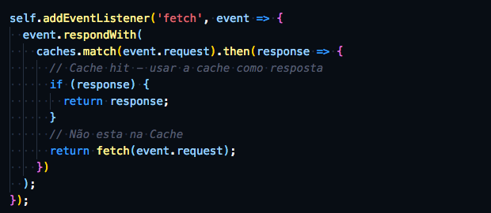
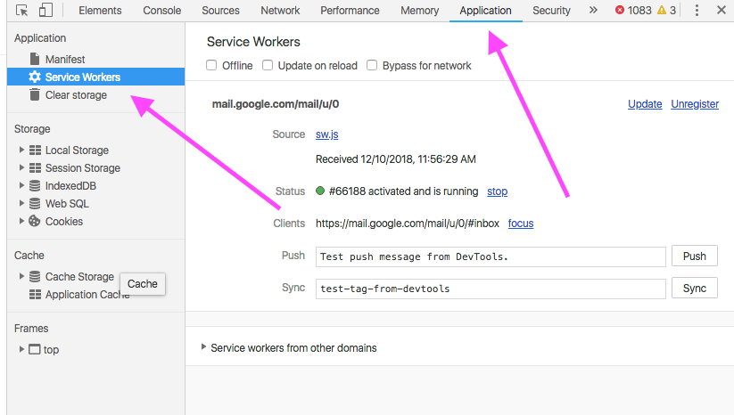

Service Workers
Pushing the Web forward
André Gonçalves
@andregoncalves
André Gonçalves
Senior Consultant
The last time we met I said ...
Learn and invest on the Web Platform Core, instead of frameworks:
CSS instead of SASS, LESS, etc
ES6/7/8 instead of Typescript, CoffeeScript, etc
Web Components instead of React, Angular, Vue, etc
Platform features will outlive libraries
And your are reducing the number of dependencies and the abstraction level

Service Workers
Web Workers
A browser API to run scripts in background threads. The worker thread can perform tasks without interfering with the UI thread.
Threads ?
JavaScript is a single threaded language, meaning it does one thing at a time. However sometimes we need to do more than one thing at a time...
Event Loop
Web Workers are useful for:
Any kind of long running expensive process:
- Processing large JSON datasets
- Reading/writing local storage databases
- Background updates
- Real time text formatting, spell checking, and syntax highlighting
- Filtering and processing images in a canvas
- Processing multimedia (audio and video)
- ...
API
Comlink
Service Workers
Are a special kind of Web Worker with Super Powers
What is a Service Worker?
It's a JS file that runs separately from the main browser thread, intercepting network requests, caching or retrieving resources from the cache, and delivering push messages.
Think of it as a Javascript Programmable Network Proxy
Service Worker
Service Worker
Service Worker
- Offline First
- Programmable cache control
- Custom built responses
- Background Processing
- Push Messages
- Background sync
- Task Scheduler
Cache? We already have cache...
The service worker cache API gives you more detailed and fine-grained control than the built-in browser cache does (with Cache-Control headers)
It can run before page is loaded and start the application
Cache logic is programmable in JS, allowing (for example) to cache assets not yet visited, and implement your own cache purge logic.

Background Execution!
It runs regardless of if page/site is loaded in the browser
On Desktop: If the browser is completely closed then service workers can not run and will not dispatch any events (i.e. no push or background sync events)
On Mobile: The events will still be dispatched (i.e. background sync will trigger when the users device comes online and push will be received and cause a push event).
Awesome, how can I use it?
Service worker (like Web Workers) live on a separate JS file.
We kick start the process by registering it:
Install Event
One typical approach is to immediatelly cache important assets
The install event is called on the SW (sw.js)
Intercepting Network Requests
The fetch event is called for *every* network request
Saving to the Cache
SW Debugging
In Chrome DevTools Application Tab
Word of caution
Cache is tricky!
Implementing a working, robust, cache system is difficult.
SW is a low level API and you can easily shoot yourself in the foot.
A good way to start is using Google's Workbox Javascript Library and then if needed move to your own custom implementation
And there's a lot more for you to explore
Push Notifications for the Web
(use it responsibly)
Background Sync
(defer actions until there is a stable network connectivity)
Background Fetch
(download large data, like movie, audio files, etc))